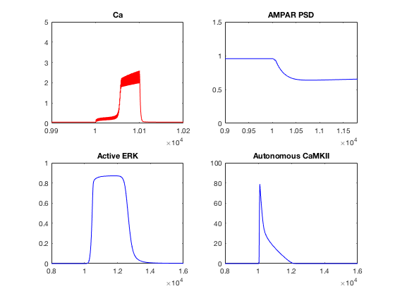
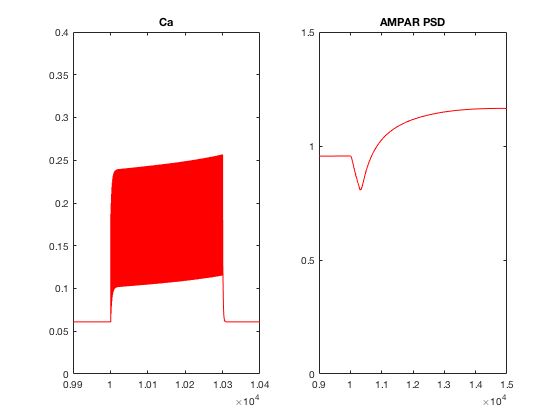

Model of Cerebellar PF-PC
Long-Term Depression & Potentiation
developed by Andrew R. Gallimore
andrew.gallimore@oist.jp
December 2017
for Matlab Simbiology
LTD_LTP_Model.m
This is the model itself. Running this will build the model in Matlab Simbiology.
However, for standard simulations of the model, it is advised to use RUN_LTD_LTP.m
RUN_LTD_LTP.m
This code will run a standard LTD or LTP protocol and display some basic plots.
You will be prompted to run either an LTP or LTD protocol.
LTD selection generates (in 5 minutes or so), similar to subplots in figures 3A, 4C in the paper:

LTP selection generates this image (in 5 minutes or so) calcium traces similar to figure 6F in the paper:

pf_pulse_ltp.m
This is a function to generate the large number of PF stimuli as events in Simbiology
cf_pulse.m
This is a function to generate the large number of CF stimuli as events in Simbiology